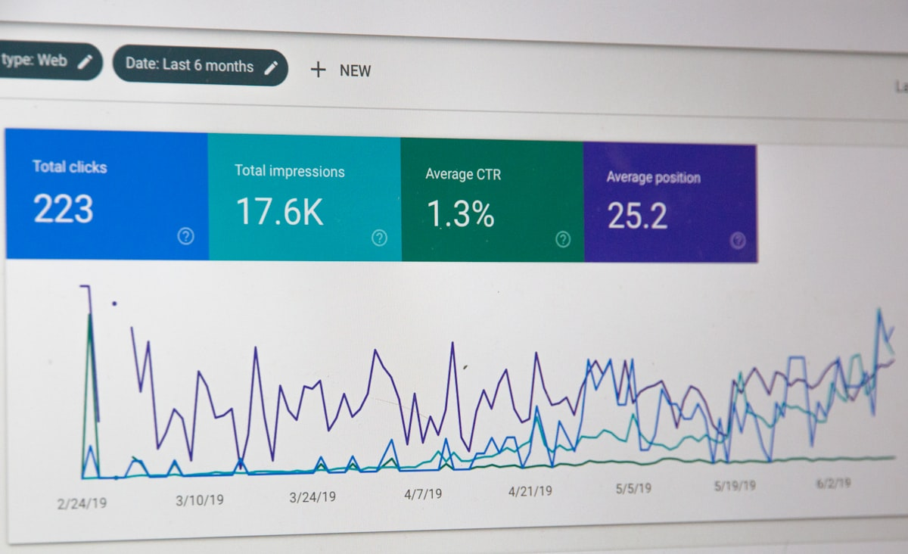

In every society, there is an unspoken understanding: when someone helps us in a meaningful way, particularly when that help enables us to care for the people we love, we tend to think well of them. We speak positively about them. We remember them. This is not sentimentality - it is a pattern of human behaviour that has been observed across cultures and studied extensively by social scientists for over six decades.
For brands operating in South Africa's competitive marketing landscape, this raises an important question: beyond impressions and visibility, what kind of relationship are they building with the communities they hope to reach?
The Science of Reciprocity
The most foundational work on this phenomenon comes from sociologist Alvin Gouldner (1960), who argued for a universal "norm of reciprocity". Gouldner observed that across diverse societies, people feel a moral obligation to repay benefits they have received, even when no explicit agreement exists and even when the benefactor does not expect immediate repayment.
This builds on earlier anthropological work by Marcel Mauss (1925), whose The Gift demonstrated that gift-giving creates obligations of reciprocity that bind people together in lasting relationships. Later, Peter Blau (1964) distinguished between purely economic transactions and social exchange, where trust develops through repeated acts of consideration and the relationship itself becomes valuable over time.
More recently, Robert Cialdini (2009) identified reciprocity as one of the fundamental principles of persuasion, whilst evolutionary biologists Nowak and Sigmund (2005) demonstrated how indirect reciprocity - where people help others and gain reputation in the community - can evolve and be sustained in human societies. Gratitude research by McCullough et al. (2001) found that gratitude motivates people to strengthen relationships with those who have helped them.
Why Family Matters
The research becomes particularly relevant when the help enables someone to care for their family. Providing for loved ones is deeply tied to identity, dignity and responsibility in most cultures. In South Africa specifically, the concept of ubuntu - often translated as "I am because we are" - reflects a worldview that emphasises interconnectedness, mutual care and collective responsibility (Metz, 2007; Shutte, 2001).
When assistance directly supports a person's ability to fulfil their responsibilities to their family, it is likely to be perceived as especially meaningful. The psychological literature on gratitude suggests that the perceived value and intentionality of help matter - help that addresses important needs tends to elicit stronger grateful responses (McCullough et al., 2001).
From Individual Gratitude to Community Regard
An important extension of this research is indirect reciprocity. Nowak and Sigmund (2005) showed that in human societies, people don't just repay those who helped them directly - they also gain reputation through their helpful actions, and others are more likely to help those with good reputations. This creates a ripple effect: acts of help can generate positive regard that extends beyond the immediate recipient to their broader social network.
In tight-knit communities, news travels. When someone is able to put food on the table, pay school fees, or cover essential expenses because of an opportunity, they often speak of it with gratitude to their family, neighbours and community. That positive sentiment can extend to those associated with creating that opportunity.
The RoadReach Difference
This is where the model matters. RoadReach operates South Africa's premium mobile billboard network of 750+ vehicles, connecting brands with communities across Gauteng (Johannesburg, Pretoria), Cape Town and Durban. Through this network, vehicle owners earn income from having their vehicles wrapped with brand advertising - income that helps them support their families.
When a brand chooses to advertise through the RoadReach network, they are associated with enabling that income opportunity. Drawing on the well-established norm of reciprocity and indirect reciprocity, this association can contribute to positive regard - trust, respect and goodwill - from drivers, their families and their communities.
The key distinction is important: RoadReach doesn't ask communities to "like" an ad. The model creates a different kind of association - one rooted in economic opportunity that helps families. Brands don't just occupy advertising space; they become associated with a mechanism that supports livelihoods in the communities where those vehicles travel every day.
A More Human Approach to Brand Presence
In a media landscape often focused on reach metrics, there's value in considering the quality of association. For South African brands looking to build authentic connections, communities are not just audiences to be reached - they are networks of relationships where reputation matters. Being spoken well of in those networks, because of an association with helping families, is a form of goodwill that cannot be bought through traditional advertising alone.
"The human tendency to think well of those who help us support our families is one of our oldest social patterns. From gift economies to modern gratitude research, meaningful help creates lasting positive regard."
Conclusion
When brands advertise through the RoadReach network, they tap into this principle differently. By enabling drivers to earn income to support their families, they become associated with that help. The result is the potential to earn not just attention, but trust, respect and goodwill - becoming, in a real sense, part of the fabric of the communities they reach.
This is the trust economy of helping. And in South Africa's communities, that trust still counts for everything.
Ready to Build Trust in South African Communities?
Learn how your brand can become part of the communities that matter through RoadReach's mobile billboard network.
Book a Meeting View PackagesSources & Further Reading
- Blau, P. M. (1964). Exchange and power in social life. New York: John Wiley & Sons.
- Cialdini, R. B. (2009). Influence: Science and practice (5th ed.). Boston: Pearson Education.
- Gouldner, A. W. (1960). The norm of reciprocity: A preliminary statement. American Sociological Review, 25, 161–178. https://doi.org/10.2307/2092623
- Mauss, M. (1925). The gift: Forms and functions of exchange in archaic societies. (I. Cunnison, Trans., 1954). London: Cohen & West.
- McCullough, M. E., Kilpatrick, S. D., Emmons, R. A., & Larson, D. B. (2001). Is gratitude a moral affect? Psychological Bulletin, 127(2), 249–266. https://doi.org/10.1037/0033-2909.127.2.249
- Metz, T. (2007). Toward an African moral theory. The Journal of Political Philosophy, 15(3), 321–341. https://doi.org/10.1111/j.1467-9760.2007.00280.x
- Nowak, M. A., & Sigmund, K. (2005). Evolution of indirect reciprocity. Nature, 437, 1291–1298. https://doi.org/10.1038/nature04131
- RoadReach. (n.d.). South Africa's premium mobile billboard network. https://roadreach.co.za/
- Shutte, A. (2001). Ubuntu: An ethic for a new South Africa. Pietermaritzburg: Cluster Publications.